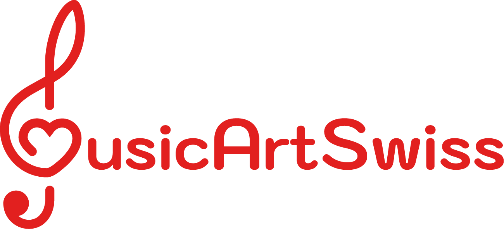
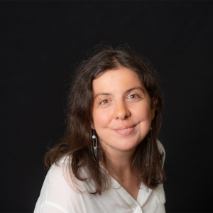
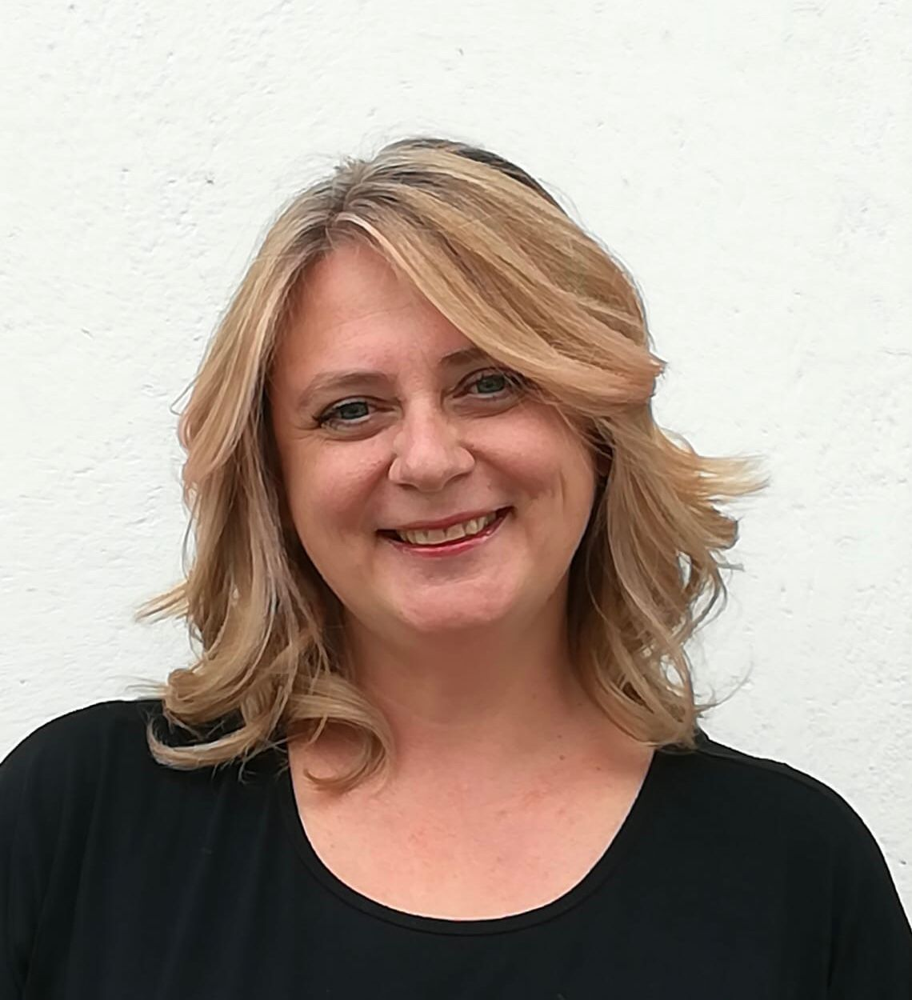
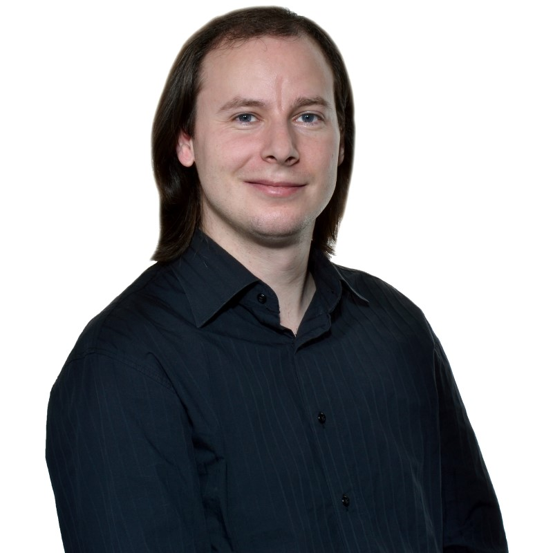
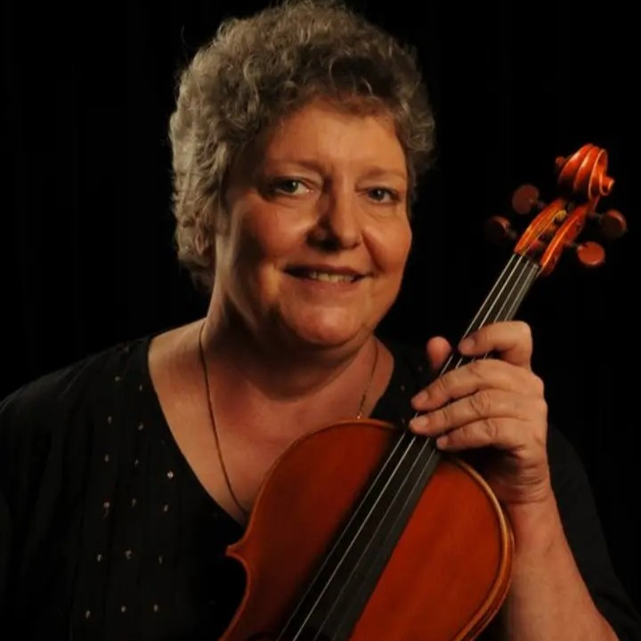

MusicArtSwiss est une association culturelle, dont le siège à Lausanne
Le membres du comité possèdent une large expérience dans l'organisation de différents projets culturels: rencontres internationales de musiciens et d'artistes, festivals et concerts, masterclasses, expositions.
L’association souhaite transmettre son expérience et son enthousiasme aux nouvelles générations d’artistes, en les soutenant dans la réalisation de leurs projets artistiques et en favorisant les rencontres.
Buts de l’association
Développer des projets orientés vers l’éducation musicale, artistique et culturelle
Soutenir des projets favorisant l'intégration sociale et culturelle des enfants et des jeunes en facilitant l'accès à la pratique artistique, en particulier à la musique d'ensemble
Collaborer avec les autorités scolaires ainsi qu'avec les instances culturelles en Suisse et dans d'autres pays dans le cadre de projets éducatifs musicaux et artistiques
«Tout le bonheur du monde»
Dimanche 10 mars 2024, 17h
Auditoire César Roux, CHUV, Lausanne
Entrée libre
Comité

Nina Sofronski
Présidente

Pierre Crotti
Vice-président

Milutin Pavlovic
Secrétaire et trésorier
Anna Kaira
Responsable artistique

Christine Soerensen
Responsable pédagogique
Violoniste et Altiste
Nous soutenir
Si les projets de MusicArtSwiss, vous tiennent à cœur devenez membre de notre association! Vous contribuez ainsi à soutenir directement les activités de l'association.
Montant de cotisation annuelle de CHF 50.-
Jeunes jusqu’à 20 ans - gratuits
Couple ou famille 20% de rabais
Pour devenir membre de l'association contactez-nous
Tous les dons sont évidemment les bienvenus!
Pour le paiement de votre cotisation, vous avez le choix entre:
- QR code Twint
- Virement bancaire